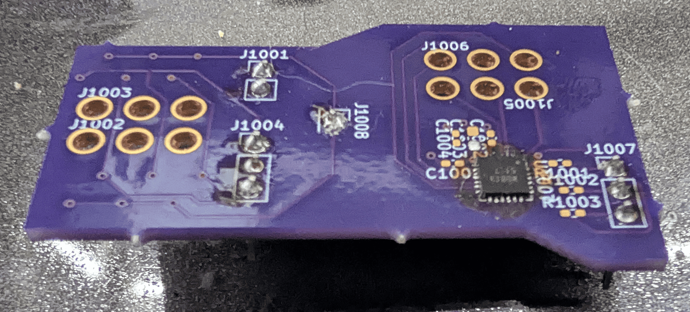
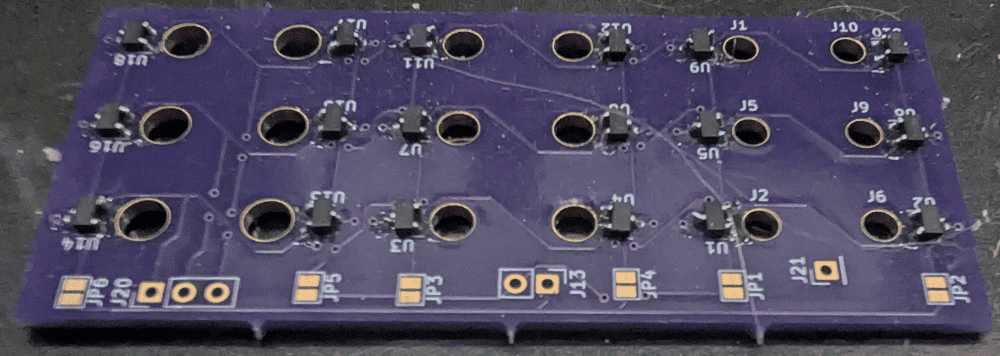
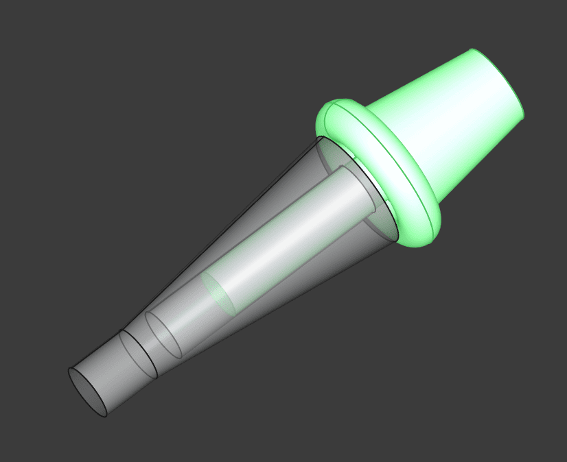
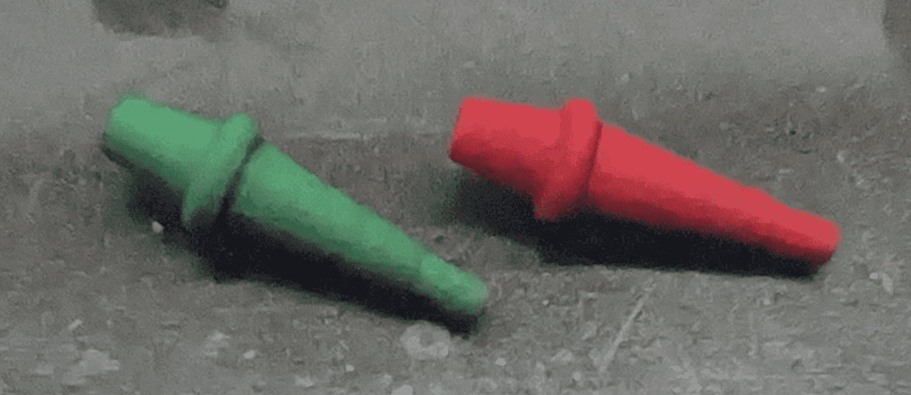
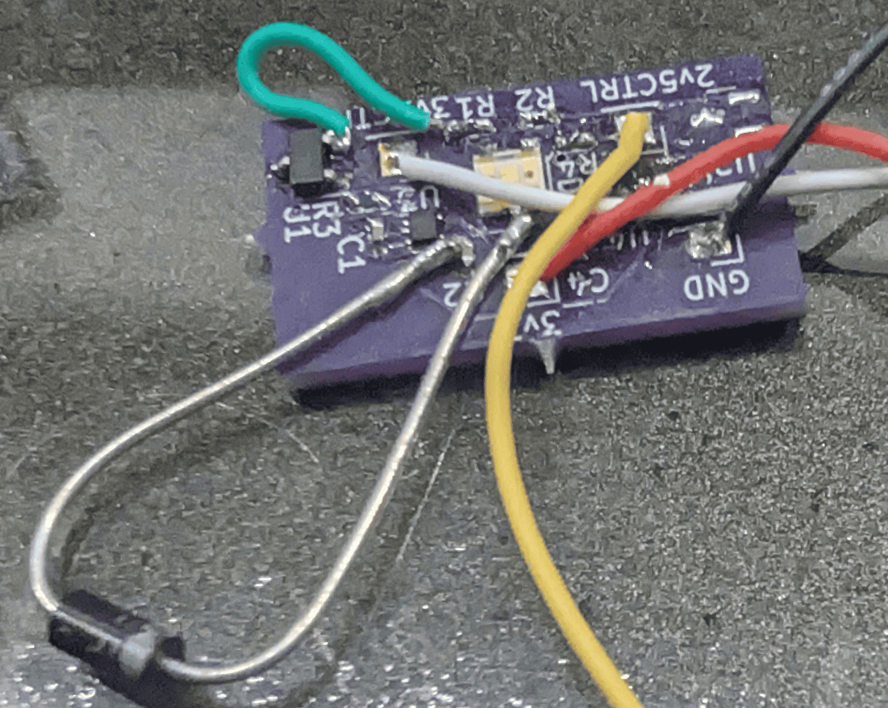
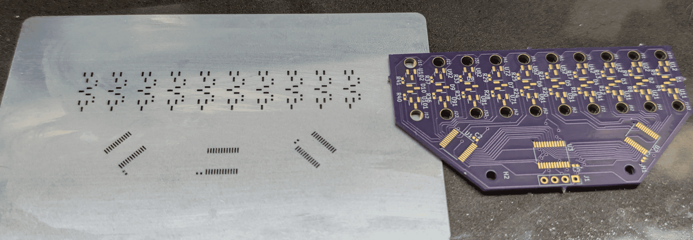

Electronic Cribbage Gen1
The first check for the cribbage board, was a few board spins first interfacing to the physical world. The first test, was a board spin checking capacitive touch versus hall effect. The thought process with the captouch was metal pegs might be able to influence the field. The hall effect was chosed in order to try out a fully non-contact implementation, which would allow more levers. In the below photo, J1002/1003 had 6 seperate hall effects to try out different senativities.

Following this testing, it was decided to go forward with hall effect. The advantages here was a higher degree of offerings, meaning BOM can directly dictate performance better, as well as it adds the ability to add the side effect that the hall effects could source enough current to light an LED, meaning no additionla GPIO nor controller was necessary, simplifying the daughter boards. BOM control became one of the tests to be conducted further, so Hall placement in combination of *which* halls to use, and which polarity to sense was performed, as the following photo outlines. In this sample, 6 different hall effects with 3 different peg holes, and different overall hall spacings.

During this process, 3D prints were tuned and honed, in order to accept a cylindrical magnet inside of an internal cavity. In this process, the aforementioned Hall Test board was used to test the combinations thereof. Approximately 8 different magnets were tested of varying sizes, strengths, and whether to use traditional or diametrically magnetized. Shown below were the end results, as well as the model that was printed. I ended up having to get SLA printed from a firm as my FDM printer was not able to reach the tolerance necessary to friction fit the magnets such that they would not need gluing in. The print was performed in two seperate pieces, as the model shows. This was glued together to ensure it did not fall apart in the future.


Following the testing of the Hall effects, and finding one that could source a decent amount of current, the explicit RG LED was tested. The two footprints on the exterior were for the hall effects. They were tested with and without mosfets as current amplifiers. This was done to see how the LED looked in daylight, and if it needed amplification in order to be seen. The incredible amount current that the mosfets provided, did not appear to be necessary once an LED which could source 2mA was chosen. In addition, with some current limiting resistors, it was seen that the Hall Effect could both drive the LED, and be sensed logically.

This knowledge allowed me to start on the primary daughterboard, which would allow the 3D modelling to begin. With the hall effects, LEDs, and current limiting resistors chosen, a daughterboard was spun up (with a stencil for soldering), as seen below. The board was designed to attempt to maintain an equal distance between all hall effects, according to the prior test board to attempt to reduce magnetic cross talk. As discussed in the result, there was still some magnetic "cross-talk" when it comes the field necessary to release the hall effect. This comes about the most when two players are going 1:1 pegging for example, and maintaining a cluster of pegs. The result here is the previously activated hall effect might stay active, resulting in an incorrect recording, and the LED remaining active. Thankfully the user can see the error.

From the software perspective, it was quite simple in the grand scheme of things. The hardware was simply 6 GPIO expanders (each mated to 2 buffers to switch between) of which had different addresses on the I2C bus, 5 additional hall effect sensors on the main board, a transmit-only SPI bus for the custom RGB 7 segment, and some logic surrounding how to detect pins, and how to detect wrap around as the user must go around twice. The software was written in C, with VisualGDB as the framework / software interface. Originally it was going to use an RTOS, but considering all the system has to do is respond to changes from the GPIO expanders (since the power controller failed to work as intended), FreeRTOS was not implemented. The RGB 7 Segment was simply just an R,G,B buffer that had to be the size of approximately 14, so it simply acted as that, and considering it changed irregularily (i.e. on peg changes), no DMA nor interrupts were needed. Overall, incredibly simple software.
With the full PCBAs created, the 3D print created, the magnets inserted inside of the print, and software completed, the entire cribbage board was finalized as shown in the below photo. It this sample, it is showing the #6 because the green peg, is at the 6th point position form the start. On the exterior, is 4 positions to hold the pegs for transport. Not pictured here, is the cover which mates with the magnets. There is a small opening on the bottom to allow the insertion of a USB-C cable, to charge the battery that is beneath the RGB LED 7 Segment.